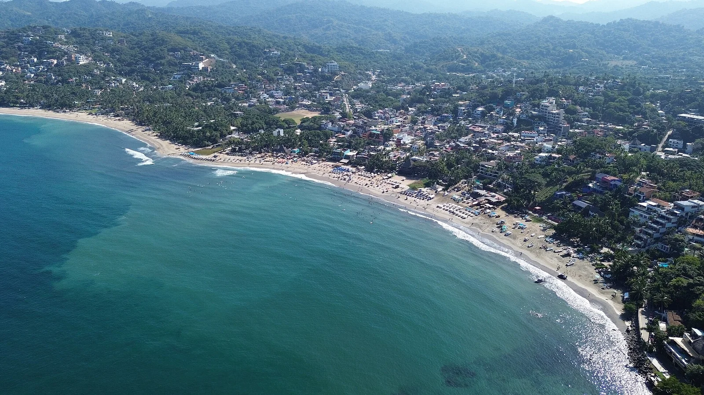

Sayulita
Mexique · surf, paddle, baignade, snorkeling

Un village de la côte Pacifique devenu spot d’apprentissage : vague molle, eau tiède, et des baleines à bosse au large en hiver.
- Lieu
- Mexique
- Niveau
- Débutant
- Activités
- surf, paddle, baignade, snorkeling
- Type d'eau
- Mer / océan
- Coordonnées
- 20.87, -105.44 (position approximative du secteur)
Dangers à connaître
- Baie petite et très fréquentée.
- Quelques rochers côté nord de la baie.
Le conseil d'Ocean Buddy
Le pic de gauche, à droite de la baie, est plus calme que le pic central.
Ouvrir dans Ocean Buddy Télécharger sur l'App Store
Source : Description historique Ocean Buddy · vérification externe en attente.